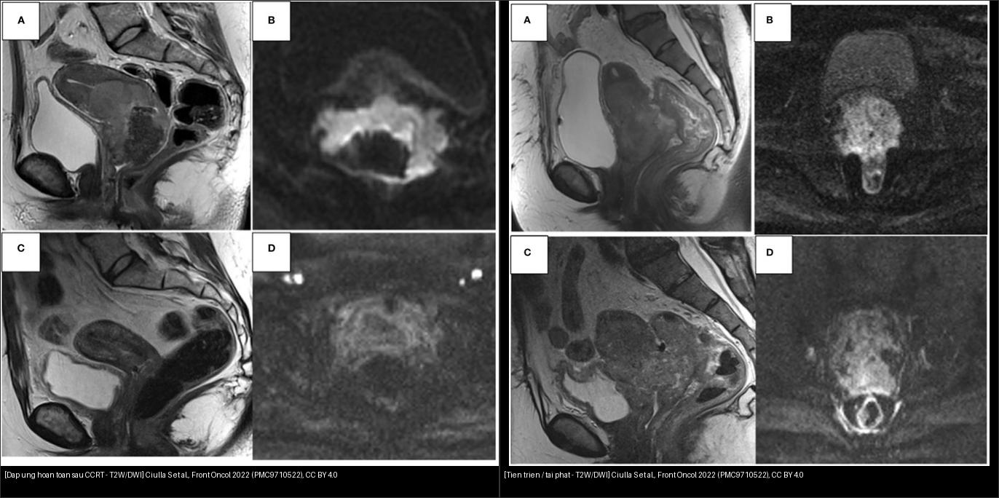
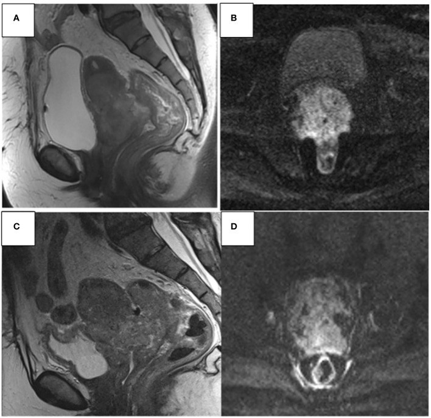
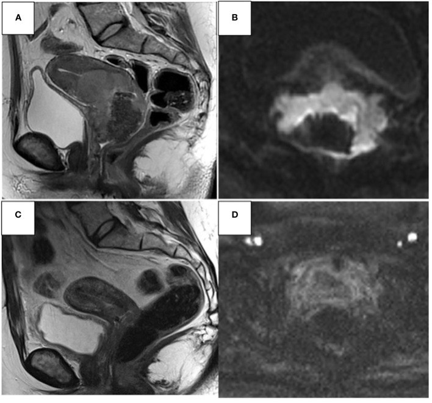
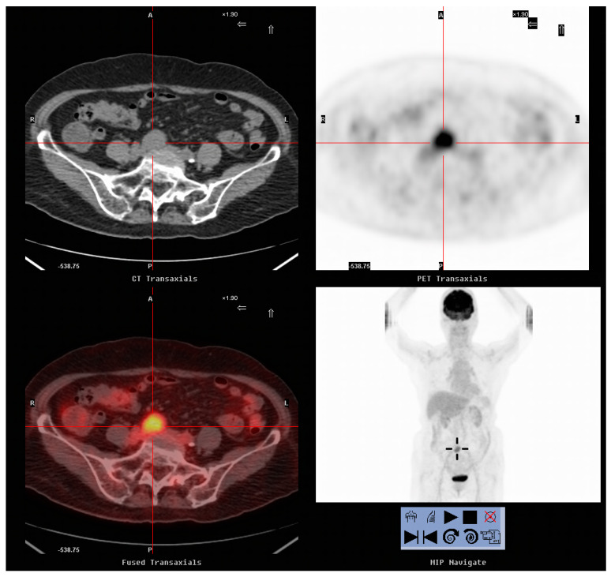
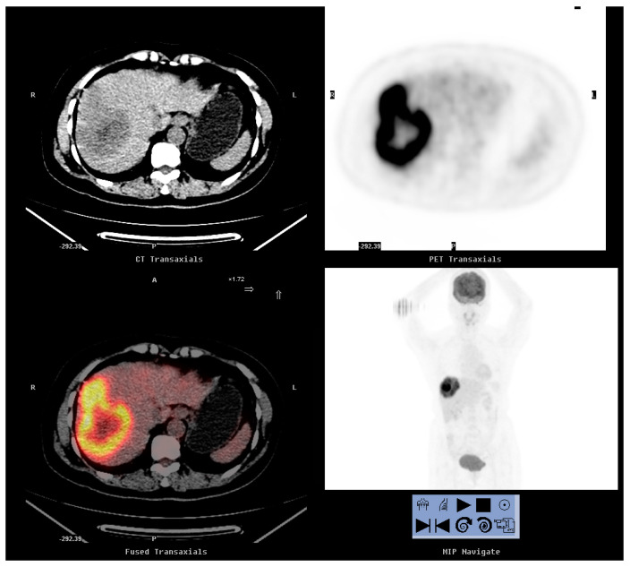
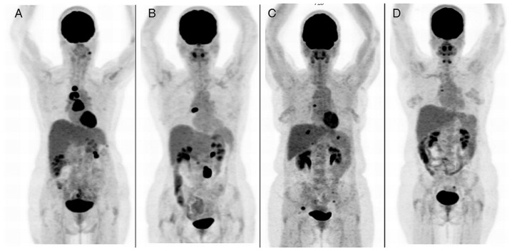
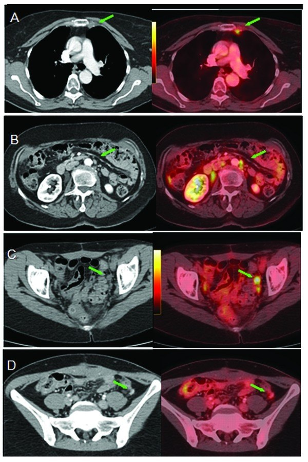
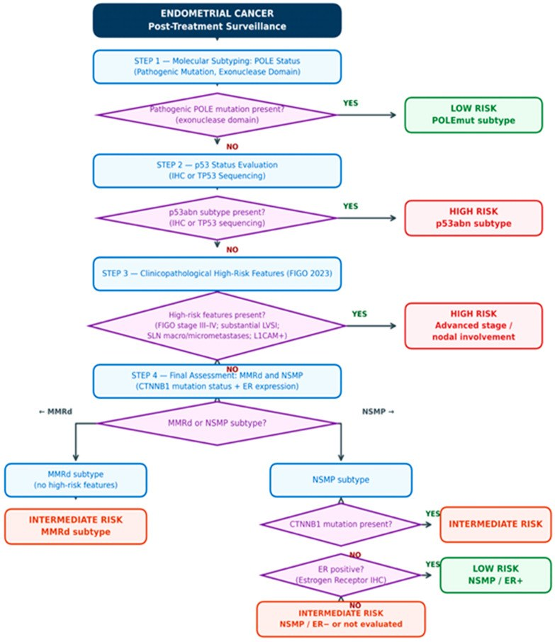

577 — Theo dõi & phát hiện tái phát ung thư phụ khoa: RECIST, CA-125, CT/MRI/PET-CT & tái phát muộn / Surveillance & recurrence detection in gynecologic cancer
Tags: pattern:tai-phat vung:tieu-khung vung:phuc-mac score:RECIST score:FIGO protocol:CT-bung-chau protocol:PET-CT protocol:MRI-tieu-khung incidentaloma:tai-phat-sau-dieu-tri
Mức chắc chắn (certainty): tổng hợp y văn (literature synthesis) — nhóm tự biên từ y văn mở (Front Oncol, Diagnostics, Oncology Letters, Cancers, Insights Imaging, Br J Cancer), có ca nguyên văn minh họa trong quiz.
Câu chốt của bài: sau điều trị triệt căn, mô xơ/hoại tử do xạ tồn tại tới 6 tháng và có thể giả u trên T2W; thứ phân biệt u sống vs xơ là DWI (tín hiệu cao ở b cao + ADC thấp = u sống; thấp/ADC cao = xơ). Đánh giá đáp ứng theo RECIST 1.1 (không phải "to hơn = tái phát"), và PET/CT có NPV rất cao (99,5%) khi theo dõi thường quy nhưng PPV chỉ 76% — vì vậy tái phát = bằng chứng MỚI (ngấm/DWI sáng/PET dương) xuất hiện sau một giai đoạn ổn định, không phải thay đổi hậu xạ đơn thuần.
1. Tổng quan bệnh học – cơ chế hình ảnh
- Vì sao "đọc tái phát" khó: sau xạ trị/CCRT và phẫu thuật, vùng tiểu khung có xơ (fibrosis), hoại tử, phù, huyết thanh tụ, lymphocyst — tất cả đều làm thay đổi tín hiệu T2W và có thể giả u (mimic). Ghi nhận: hoại tử/xơ do hóa-xạ có thể tồn tại tới 6 tháng, làm ống cổ tử cung giãn/không đối xứng (Ciulla 2022). Tỷ lệ còn u (residual disease) sau CCRT ~40% — nhóm này theo dõi sát.
- TẠI SAO DWI là chìa khóa (cơ chế vật lý): u sống mật độ tế bào cao → nước bị hạn chế khuếch tán → tín hiệu cao ở b-value cao + ADC thấp. Ngược lại xơ/hoại tử → nhiều nước tự do trong gian bào → tín hiệu thấp ở b cao + ADC cao. Vì vậy DWI (kèm ADC map) là chuỗi trung tâm để phân biệt u còn sống vs xơ hậu xạ (ESUR 2021).
- TẠI SAO PET/CT hiệu quả: tế bào u tăng chuyển hóa glucose → ¹⁸F-FDG tích tụ → SUVmax cao; PET phát hiện được tổn thương hạch không to (< 1 cm) và di căn ngoài tiểu khung mà CT bỏ sót.
- Vị trí tái phát hay gặp: buồng trứng — hạch và mảnh ghép phúc mạc (peritoneal implants) hay nhất, rồi gan/lách/màng phổi/phổi/xương; cổ tử cung — tại chỗ (chu cung, âm đạo) + xa (phổi, hạch cạnh ĐMC, hạch thượng đòn); nội mạc tử cung — vòm âm đạo (vaginal vault), hạch chậu, rồi di căn xa.
- Dịch tễ/ngưỡng định lượng: PET/CT sau điều trị (n = 1712 lần chụp/654 BN): Se 94,4%, Sp 97,3%, PPV 76,0%, NPV 99,5%, độ chính xác 97,0%; theo dõi thường quy NPV 100%, khi nghi tái phát PPV 96,5% (Kim 2026). SCC-Ag ≥ 1,5 ng/mL = ngưỡng tăng; SCC-Ag Se 87,3%/Sp 57,6% so với FDG-PET/CT Se 98,2%/Sp 90,9% (Peng 2020).
2. Mẫu hình + chẩn đoán phân biệt theo vị trí (gamut)
- Hạch: hạch chậu/cạnh ĐMC/thượng đòn to ra hoặc mới xuất hiện, mất rốn, bờ tròn không đều, ngấm mạnh/hoại tử; PET dương.
- Phúc mạc: nốt phúc mạc, dày mạc nối ("bánh"), "khía" (scalloping) mặt gan–lách, dịch ổ bụng mới = carcinomatosis tái phát.
- Tại chỗ (cổ tử cung/nội mạc): khối ở chu cung/vòm âm đạo/ống cổ ngấm + DWI sáng/ADC thấp; tái phát âm đạo sau cắt tử cung = "vault recurrence".
- Di căn xa: gan, phổi, màng phổi, xương, não, da/rốn.
- Tái phát muộn (late recurrence): một số thể rất trễ, cần theo dõi dài (xem bài 537 u giáp biên — 32% tái phát sau 5 năm; bài 533 u tế bào mầm — tái phát muộn).
- Bắt chước (mimic) — luôn nằm trong gamut: xơ sau xạ, hoại tử (tới 6 tháng), huyết thanh tụ, lymphocyst, giãn vòi trứng sau xạ, u mô mềm lành sau phẫu thuật.
3. Bảng so sánh phân biệt (ma trận đối chiếu)
| Thực thể (entity) | Hình ảnh điển hình | Chốt vào (rule-in) | Chốt loại (rule-out) | Gợi ý xác nhận |
|---|---|---|---|---|
| Tái phát tại chỗ (chu cung/vòm âm đạo/ống cổ) | Khối mô mềm mới/ngấm mạnh, DWI sáng + ADC thấp, bờ không đều | Mô mới ngấm + DWI sáng/ADC thấp xuất hiện sau giai đoạn ổn định | Xơ: T2 tối nhưng DWI thấp + ADC cao | Sinh thiết, PET/CT |
| Xơ/hoại tử sau xạ (giả u) | T2 tối/rỗ, có thể phì đại tới 6 tháng, mờ dần theo thời gian | Ổn định/cải thiện trên chuỗi ảnh + ADC cao + PET âm | Ngấm mới + DWI sáng + PET dương → u | So chuỗi ảnh cũ, MRI DWI, PET |
| Hạch di căn | Hạch ≥ 10 mm trục ngắn (nghi ≥ 10 mm; đích RECIST ≥ 15 mm), mất rốn, bờ tròn | Hạch mới/to ra + ngấm đậm/PET dương, tiền sử ung thư | Hạch phản ứng: giữ rốn mỡ, bầu dục, PET âm/ngấm nhẹ | PET/CT, sinh thiết (EBUS/US) |
| Carcinomatosis phúc mạc tái phát | Nốt/dày phúc mạc, "khía" mặt gan–lách, bánh mạc nối, dịch mới | Nốt đặc ngấm + "khía" + dịch mới | Báng tự do: mặt tạng nhẵn, không nốt; LPD lành: nốt giống u xơ + báng ÍT (bài 518) | CA-125, sinh thiết, CT/MRI |
| Di căn đơn độc/ít ổ (oligometastasis) | 1–5 ổ (hạch, gan, phổi) xuất hiện muộn, còn mổ/xạ được | Số ổ ít + không lan phúc mạc/di căn rộng → định hướng can thiệp tại chỗ | Lan nhiều ổ/kèm dịch phúc mạc → toàn thân | PET/CT toàn thân định vị |
| Huyết khối tĩnh mạch vs hạch | Khối dọc theo mạch (TM chậu/chủ dưới), ngấm theo mạch | Nội lòng mạch, ngấm + phình mạch thấy được trên cả 2 thì | Hạch: nằm cạnh mạch, mất rốn, không trong lòng mạch | CT 2 thì, MRI, siêu âm Doppler |

Trái: đáp ứng hoàn toàn sau CCRT — chất T2 giảm mạnh, DWI hết sáng. Phải: tiến triển (tái phát) — u lan thân tử cung, 1/3 dưới âm đạo, mạc treo trực tràng, thành trực tràng–bàng quang, DWI sáng. Nguồn: Ciulla S et al., Front Oncol 2022 (PMC9710522), CC BY 4.0. Ảnh ghép letterbox.4. Protocol chụp + RECIST 1.1 + lịch theo dõi
- RECIST 1.1 (đánh giá đáp ứng, không phải "chỉ tái phát"): đo tối đa 5 tổn thương đích / 2 cơ quan; tổn thương đích ≥ 10 mm (trục ngắn; hạch: trục ngắn ≥ 15 mm). CR = mất hết; PR = giảm ≥ 30% tổng đường kính; PD = tăng ≥ 20% và ≥ +5 mm so với nadir (hoặc tổn thương mới); còn lại SD. Độ biến thiên giữa người đọc (inter-observer) phụ thuộc cách đo, chọn tổn thương và chất lượng ảnh (88 nghiên cứu; 68,2% chỉ dùng CT) → cần giao thức đo chuẩn hóa (Smesseim 2026).
- CA-125 & dấu ấn: CA-125 cho ung thư biểu mô buồng trứng (tiêu chuẩn GCIG: tăng ≥ 2× ULN hoặc ≥ 2× giá trị nadir, xác nhận trên 2 lần); SCC-Ag ≥ 1,5 ng/mL cho SCC cổ tử cung; β-hCG/AFP/LDH/inhibin B theo thể (bài 533/536). CEA, CA19-9 hỗ trợ ở u nhầy.
- Lịch theo dõi (nguyên tắc): khám + dấu ấn mỗi 3 tháng trong 2 năm đầu, rồi 6 tháng tới 5 năm, sau đó hằng năm; hình ảnh chỉ khi có triệu chứng/nghi ngờ (chụp thường quy không cải thiện sống còn nhưng tốn kém — chi phí 13.454 USD/tái phát bằng hình ảnh vs 3.924 USD bằng CA-125, tổng gần 2,4 triệu USD/16 năm; Rettenmaier 2010). PET/CT + MRI có cản quang 3–6 tháng sau CCRT cho ung thư cổ tử cung tiến xa (Ciulla 2022).
- Theo dõi cá thể hóa theo phân tử (nội mạc tử cung): mô hình 3 tầng (thấp – trung – cao) tích hợp phân nhóm phân tử (POLEmut, MMRd, NSMP, p53abn) + yếu tố lâm sàng–bệnh học + kiểu hình tái phát (Szatkowski 2026) → tầng nguy cơ cao theo dõi dày hơn.
flowchart TD
A[BN ung thư phụ khoa sau điều trị triệt căn] --> B{Triệu chứng / dấu ấn tăng?}
B -->|Không| C[Theo dõi: khám + dấu ấn mỗi 3 tháng 2 năm đầu]
B -->|Có| D[CT ngực-bụng-chậu ± MRI tiểu khung có cản quang]
D --> E{Thấy tổn thương MỚI/ngấm?}
E -->|Không, chỉ T2 tối ổn định| F[So chuỗi ảnh cũ + DWI]
E -->|Có| G[FDG-PET/CT toàn thân định vị]
F --> H{DWI sáng + ADC thấp?}
H -->|Không, ADC cao, ổn định| I[Xơ hậu xạ - tiếp tục theo dõi]
H -->|Có| G
G --> J{Số ổ di căn?}
J -->|1-5 ổ, oligometastasis| K[Điều trị tại chỗ: mổ/xạ định vị]
J -->|Lan nhiều/phúc mạc| L[Toàn thân + hội chẩn CRS/HIPEC nếu phù hợp]
K --> M[Sinh thiết xác nhận khi nghi ngờ]
5. Biến thể bình thường và cạm bẫy
- Cạm bẫy thời gian: thay đổi hậu xạ có thể phì đại/giả u tới 6 tháng → đừng kết luận tái phát sớm; chụp lại sau 3–6 tháng + DWI.
- PET dương tính giả: viêm/nhiễm trùng, hậu phẫu, mô hạt, ruột, mô mỡ nâu, tủy xương tăng hoạt (G-CSF) → PPV chỉ ~76%; luôn đối chiếu CT cấu trúc.
- PET âm tính giả: tổn thương nhỏ (< 8–10 mm), u nhầy/hoại tử kém bắt FDG, hạch vi di căn → PET âm KHÔNG loại trừ tái phát (đã ghi nhận ở u nhầy, xem bài 537/539).
- CA-125 bình thường mà vẫn tái phát: cổ điển — trong 11 BN CA-125 bình thường, 8/11 vẫn có PET/CT dương (Dragosavac 2013); ngược lại CA-125 tăng đơn độc với hình ảnh thường quy âm → PET phát hiện tổn thương (11 BN).
- "Hai lần đo bất thường liên tiếp": một lần dấu ấn nhích nhẹ/không tương ứng thường không đủ — cần xác nhận.
- Lymphocyst/huyết thanh tụ hậu phẫu có thể giả nang tái phát — xuất hiện sớm, bờ mảnh, không ngấm, tự thoái triển.
- Cạm bẫy mặt cắt: hạch bên cạnh mạch chậu vs huyết khối trong lòng mạch — phải thấy tổn thương TRONG lòng mạch mới gọi là huyết khối.
6. Tự lượng giá — Blind Quiz (ảnh trơn ngoài, đáp án giấu trong thẻ bấm-mở)
Ca 1 — Nữ 41 tuổi, ung thư cổ tử cung xâm lấn, MRI trước và sau CCRT:

- Câu hỏi: So sánh trước (A, B) và sau điều trị (C, D). Đáp ứng hay tiến triển? Dấu hiệu chốt?
Bấm để hiện đáp án (findings + chẩn đoán)
- Dấu hiệu: sau CCRT, khối lan rộng thêm — xâm lấn thân tử cung, 1/3 dưới âm đạo, mạc treo trực tràng, thành trước trực tràng và thành sau bàng quang; DWI vẫn sáng ở vùng còn u.
- Chẩn đoán: TIẾN TRIỂN/TÁI PHÁT (progression disease) — DWI sáng + ADC thấp vùng u còn sống, kèm mở rộng giải phẫu.
- Nguồn: Ciulla S et al., Front Oncol 2022 (PMC9710522), CC BY 4.0.
Ca 2 — Nữ 37 tuổi, ung thư cổ tử cung trước và sau CCRT (đối chiếu Ca 1):

- Câu hỏi: Đáp ứng loại nào theo RECIST? Dấu hiệu chốt trên DWI/ADC?
Bấm để hiện đáp án
- Dấu hiệu: tổn thương cổ tử cung giảm mạnh (~90%) sau CCRT; vùng còn lại DWI mất sáng và ADC cao (không còn u sống).
- Chẩn đoán: đáp ứng hoàn toàn (complete response) — tương ứng RECIST CR. DWI/ADC phân biệt u sống vs xơ là mấu chốt.
- Nguồn: Ciulla S et al., Front Oncol 2022 (PMC9710522), CC BY 4.0.
Ca 3 — Nữ 78 tuổi, ung thư cổ tử cung (SCC) 10 năm trước, SCC-Ag tăng 6,7 ng/mL:

- Câu hỏi: Dấu ấn tăng nhưng BN không triệu chứng — làm gì? Ổ FDG bất thường nằm ở đâu?
Bấm để hiện đáp án
- Dấu hiệu: nốt FDG-avid 3,0 cm vùng TRƯỚC XƯƠNG CÙNG (pre-sacral), SUVmax 5,2; cắt nốt → mô bệnh = hạch di căn tái phát.
- Chẩn đoán: tái phát hạch tiểu khung muộn (10 năm sau chẩn đoán) biểu hiện chỉ bằng SCC-Ag tăng (6,7 ng/mL ≥ 1,5 ng/mL). Bài học: dấu ấn tăng đơn độc với CT thường quy âm → PET/CT.
- Nguồn: Peng NJ et al., Diagnostics 2020 (PMC7555056), CC BY 4.0.
Ca 4 — Nữ 56 tuổi, ung thư cổ tử cung (SCC, FIGO IB1) 5 năm trước, SCC-Ag 1,8 ng/mL:

- Câu hỏi: Ổ bất thường nằm đâu, kích thước/SUVmax? Điều trị đã được thực hiện?
Bấm để hiện đáp án
- Dấu hiệu: nốt giảm đậm độ 11,0 cm thùy gan phải, FDG-avid, SUVmax 7,9.
- Chẩn đoán: di căn gan từ SCC cổ tử cung (cắt thùy phải → mô bệnh: SCC biệt hóa vừa di căn). Ca minh họa: tái phát xa đơn độc có thể mổ được.
- Nguồn: Peng NJ et al., Diagnostics 2020 (PMC7555056), CC BY 4.0.
Ca 5 — Ung thư buồng trứng, CA-125 trong giới hạn bình thường (13,8–32,3 U/mL) nhưng PET/CT dương:

- Câu hỏi: CA-125 bình thường có loại trừ tái phát? PET/CT thêm được gì?
Bấm để hiện đáp án
- Dấu hiệu: PET/CT dương với hạch trên hoành (supradiaphragmatic) + di căn hạch chậu/ổ bụng, dù CA-125 chỉ 13,8–32,3 U/mL.
- Chẩn đoán: tái phát ung thư buồng trứng — trong loạt này 8/11 BN CA-125 bình thường vẫn có PET/CT dương. PET phát hiện tổn thương không ngờ 44,4%; hạch là vị trí tái phát hay gặp nhất.
- Nguồn: Dragosavac S et al., Oncology Letters 2013 (PMC3573129), CC BY 4.0.
Ca 6 — Ung thư buồng trứng, CA-125 tăng + hình ảnh thường quy bình thường:
- Câu hỏi: Khi dấu ấn tăng mà CT/siêu âm âm, tổn thương có thể nằm ở đâu?
Bấm để hiện đáp án
- Trả lời: hạch không to vẫn có thể bắt FDG — PET/CT loạt này thấy hạch vú trong trái 0,9 cm (SUVmax 3,6), hạch cạnh ĐMC bụng kích thước bình thường (< 1,0 cm), hạch chậu trái và các ổ nhỏ khác mà CT "thấy bình thường".

- Chốt: hạch < 1 cm vẫn có thể là di căn → ngưỡng kích thước không loại trừ; cần PET/CT.
- Nguồn: Dragosavac S et al., Oncology Letters 2013 (PMC3573129), CC BY 4.0.
Ca 7 — BN ung thư nội mạc tử cung, thiết kế theo dõi cá thể hóa:
- Câu hỏi: Điều gì quyết định cường độ theo dõi? Phân nhóm phân tử gồm những nhóm nào?
Bấm để hiện đáp án
- Trả lời: mô hình 3 tầng nguy cơ tích hợp phân nhóm phân tử (POLEmut — rất thuận lợi; MMRd — đáp ứng miễn dịch; NSMP — dùng CTNNB1 và ER/L1CAM điều chỉnh; p53abn — nguy cơ cao) + yếu tố lâm sàng–bệnh học + kiểu hình tái phát dự kiến. Theo dõi đồng nhất cho mọi BN là không phù hợp sinh học khối u.

- Nguồn: Szatkowski W & Glanowska-Nawrat I, Cancers 2026 (PMC13163091), CC BY 4.0.
Bài liên quan chéo
- 500 – Tổng quan Vú & Sản Phụ khoa
- 572 – Hạch trong ung thư phụ khoa: SLN, PET-CT
- 535 – Ung thư buồng trứng, phúc mạc & u Krukenberg
- 525 – K nội mạc/cổ tử cung: FIGO MRI
- 537 – U buồng trứng giáp biên (tái phát muộn)
- 533 – Theo dõi & bảo tồn sinh sản sau u tế bào mầm buồng trứng
- 539 – Pseudomyxoma peritonei (carcinomatosis phúc mạc)
- 574 – Ung thư âm hộ & âm đạo: FIGO 2021
Ảnh
577_tien-trien_MRI_PMC9710522.jpg,577_dap-ung-hoan-toan_MRI_PMC9710522.jpg— Ciulla S et al., Front Oncol 2022, CC BY 4.0.577_PET-hach-truoc-xuong-cung_PMC7555056.jpg,577_PET-di-can-gan_PMC7555056.jpg— Peng NJ et al., Diagnostics 2020, CC BY 4.0.577_PET-CA125-binh-thuong_PMC3573129.jpg,577_PET-ton-thuong-an_PMC3573129.jpg— Dragosavac S et al., Oncology Letters 2013, CC BY 4.0.577_thuat-toan-theo-doi_PMC13163091.jpg— Szatkowski W & Glanowska-Nawrat I, Cancers 2026, CC BY 4.0.composite_dap-ung-vs-tien-trien.jpg— ảnh ghép letterbox (CC BY 4.0, phái sinh từ PMC9710522).- Nguồn + giấy phép từng ảnh:
images/CREDITS.md.
Disclaimer y tế: Không dùng để chẩn đoán độc lập khi chưa có người hướng dẫn.